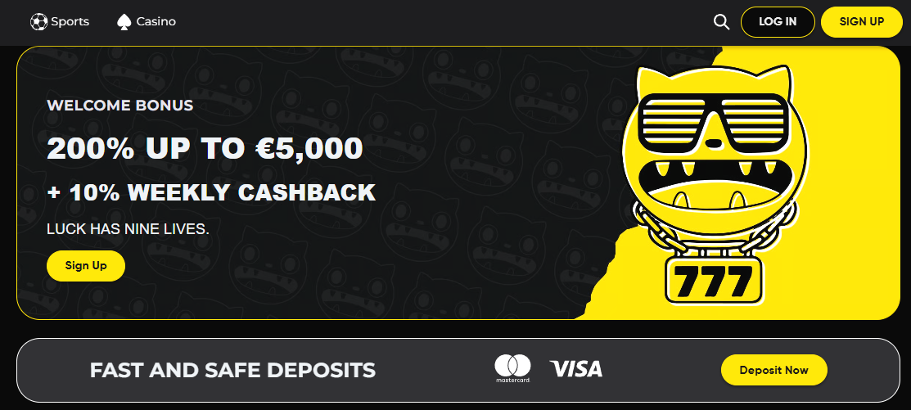

Inhaltsverzeichnis
Cat Spins Casino: Willkommen im Reich der Free Spins
Cat Spins Casino hat sich als beliebte Anlaufstelle für Spieler etabliert, die auf der Suche nach spannenden Spielen und großzügigen Bonusangeboten sind. Das Casino besticht durch seinen felinen Charme und ein Angebot, das besonders auf Free Spins und No Deposit Boni setzt.
Cat Spins Casino Lobby mit umfangreicher Spielauswahl
Cat Spins und das Wettformat
Das Wettformat bei Cat Spins ist flexibel und bietet sowohl für vorsichtige Spieler als auch für Highroller geeignete Einsätze. Egal, ob Sie Slots, Tischspiele oder Live-Casino Spiele bevorzugen – die Plattform Cat Spins Casino bietet für jeden Geschmack etwas.
Exklusive Bonus Angebote: Free Spins ohne Einzahlung & mehr
Die Welt der Cat Spins Boni ist vielfältig. Hier finden Sie einen Überblick über die aktuellsten und lukrativsten Angebote.
Cat Spins No Deposit Bonus
Starten Sie ohne Risiko! Der Cat Spins No Deposit Bonus ermöglicht es Ihnen, erste Gewinne zu erzielen, ohne eigenes Geld einzuzahlen. Oft in Form von Free Spins oder einem kleinen Bonusguthaben.
Cool Cat Casino Free Spins im Vergleich
Viele Spieler suchen nach Angeboten von Cool Cat Casino. Wir vergleichen die populärsten Promotionen:
- Cool Cat Casino Free Spins No Deposit Bonus Codes: Codes für sofortige Free Spins nach Registrierung
- Cool Cat 100 Free Spins Plentiful Treasure: Spezifisches Angebot für den Slot "Plentiful Treasure"
- Cool Cat Casino $100 Free Spins: Ein umfangreiches Free Spins Paket für neue Spieler
- Cool Cat No Deposit Codes Free Spins: Aktuelle Codes für 2026
Weitere Top Free Spins Angebote
Neben Cat Spins und Cool Cat gibt es weitere beliebte Marken mit attraktiven Free Spins:
- Super Cat Casino: 60 Free Spins – Ein großzügiges Willkommensangebot
- Fat Cat Video Slots 99 Free Spins – Perfekt für Slot-Fans
- Cheshire Cat Free Spins – Mysteriöse Angebote mit hohem Spaßfaktor
- Big Win Cat Free Spins – Für Spieler, die auf den großen Gewinn hoffen
Vergleich der besten Free Spins Angebote 2026
Aktionscodes für Cat Spins 2026
Um die besten Boni zu aktivieren, benötigen Sie oft einen Cat Spins Aktionscode oder Cat Spins Bonus Code. Diese Codes werden auf der Registrierungs- oder Kasseingabe-Seite eingegeben und schalten spezielle Angebote frei.
Cat Spins Casino Erfahrungen & Review
Ist Cat Spins Casino seriös? Unsere detaillierte Analyse basierend auf Spielerfeedback und Tests.
Vor- und Nachteile
Vorteile: Großes Free Spins Angebot, benutzerfreundliche Plattform, schnelle Auszahlungen in vielen Fällen.
Nachteile: Bonusbedingungen sollten genau gelesen werden, regionale Beschränkungen möglich.
Das Fazit unseres Cat Spins Casino Reviews: Eine solide Wahl für Spieler, die Wert auf regelmäßige Free Spins Aktionen und ein unterhaltsames Spielerlebnis legen.
Die intuitive Benutzeroberfläche von Cat Spins Casino
Spielothek & Besonderheiten
Entdecken Sie die einzigartige Welt der Cat-Themes und besonderen Features.
Beliebte Spiele mit Katzenthema
Von Cool Cat Purrfect Pets Free Spins bis zu Super Cat Free Spins – die Auswahl an Spielen mit felinen Motiven ist groß. Sogar Spielzeuge wie ein cat toy that spins inspirierten vielleicht einige der Slot-Features.
Willkommensbotschaft & Support
"Welkom bij Cat Spins" – die niederländische Willkommensphrase zeigt die internationale Ausrichtung. Der Kundensupport ist mehrsprachig und in der Regel gut erreichbar.